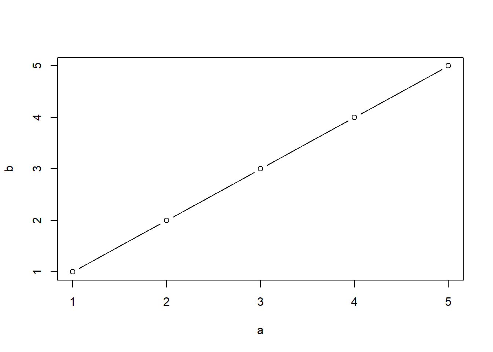
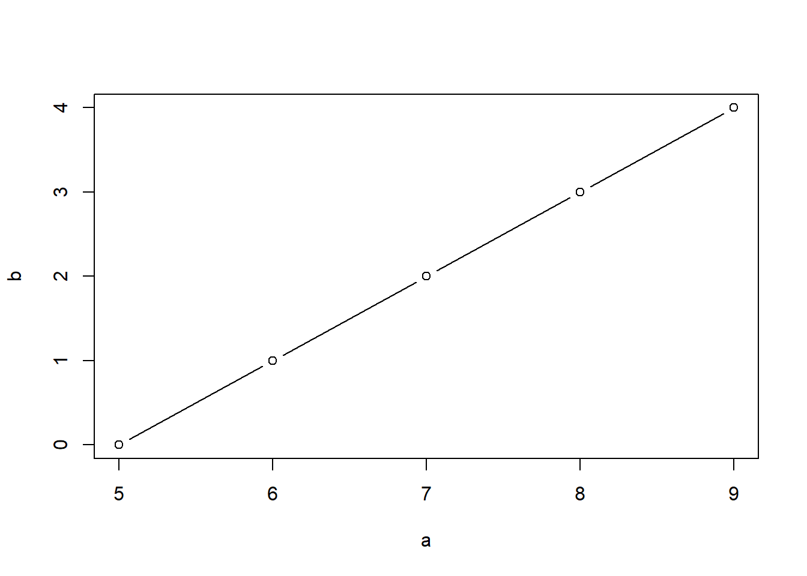
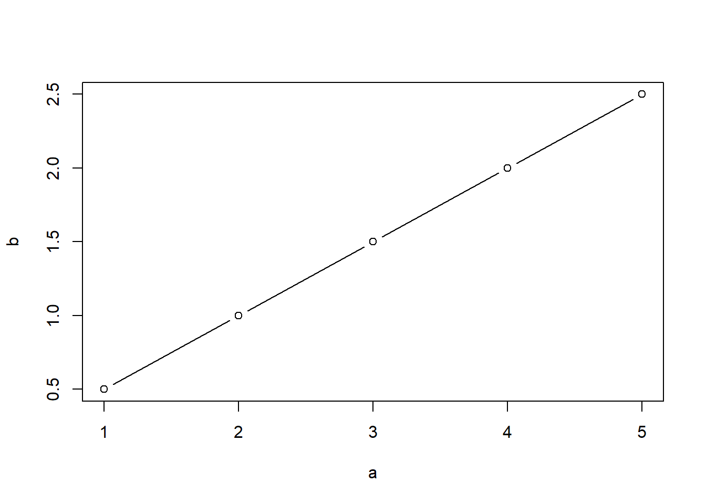

3. Análisis de concordancia en variables numéricas ✓
Nota
Le he puesto el check verde pero falta rellenar algunas fórmulas de los \(SCE\), \(F_0\) y \(\hat\rho\).
Usamos el índice kappa para la concordancia entre la clasifiación de dos agentes. También podemos ampliar el indice kappa cuando queremos ver la concordancia entre tres o más agentes.
Ahora no tenemos solo las categorías de la variable sino que existe una medida por detrás.
Sea \(Y\) variable respuesta tal que \(Y\) es variale numérica cuyos valores están asociados a una unidad de medida. Se quiere estudiar el acuerdo entre las valoraciones asignadas con k métodos diferentes.
Ver si tengo un grupo coherente entre ellos, si tienen unos criterios o baremos similares.
Concordancia entre las puntuaciones dadas a un conjunto de individuos
Para establecer comparaciones necesito medidas que no tengan unidades.
Medidas absolutas
Las medidas absolutas tienen las mismas unidades que la variable respuesta.
-
Desviación cuadrática media.
- \(\symbf{RMSE = \sqrt{\frac{1}{n}\sum_{i}{x_i}^2}}\)
-
Índice de desviación total.
- Se utiliza principalmente cuando se quiere evaluar la precisión y exactitud de un método con respecto a otro.
- Responde a cuál es el valor máximo de la desviación absoluta que se puede esperar entre dos mediciones con un cierto nivel de confianza.
-
\(\symbf{TDI = P(|X_1 - X_2| \leq \delta) = 1 - \alpha}\)
-
\(X_1, X_2\) son las mediciones a comparar.
-
\(\delta\) es el valor máximo de desviación absoluta.
- \(\alpha\) es el nivel de significancia o el complemento del nivel de confianza.
-
\(X_1, X_2\) son las mediciones a comparar.
- Si el TDI es bajo, indica que las dos mediciones (o el método y el valor de referencia) están en buen acuerdo y las desviaciones tienden a ser pequeñas.
- Si el TDI es alto, significa que hay una mayor variabilidad o discrepancia entre las dos mediciones.
-
Probabilidad de cobertura.
- Índice asociado a un intervalo.
- Probabilidad de que la diferencia entre dos mediciones, \(|X_1 - X_2\), esté contenida dentro de un intervalo de longitud \(\delta\) (el TDI).
- \(\symbf{P(|X_1 - X_2| \leq \delta)}\)
- Probabilidad de que el intervalo de error entre dos mediciones (o entre una medición y un valor de referencia) se mantenga dentro de un rango específico, con un cierto nivel de confianza.
- La probabilidad de que la diferencia entre dos mediciones caiga dentro de un intervalo predefinido.
- Quiero estudiar con qué probabilidad tomo valores en ese intervalo. no está tan claro que tenga unidades de medida (porque es una prob).
- Si le doy la vuelta, qué intervalo tengo para que el x % de las probabilidades estén en él, estoy pidiendo un superior e inferior que sí tienen unidades de medida. Referida a una prbailidad pero en realdiad dada una prob lo que bsco es un intervalo en la variable respuesta que ocurra con esa probabilidad.
Son buenos para medir las características de esa respuesta. Pero si quiero medir acuerdos comparando dos respuestas distintas no me valen.
Medidas relativas
Idea: semejanza de valores.
Coeficiente de Correlación Intraclase. Cuantifica el acuerdo entre agentes.
Coeficiente de correlación concordante. Analiza la semejanza. (semejanza \(\neq\) acuerdo)
Coeficiente de correlación de Pearson. Analiza si existe una función que permite llegar de unos valores a otros.
Si no hay relacion:
- El ICC dice que no hay acuerdo.
- El coeficiente de correlación concordante dice que no hay semejanza.
- El coeficiente de correlación de Pearson dice que no hay forma de a partir de unos valores llegar a los otros.
Ejemplos
Ejemplo a.
\(Y_a\) = medida por el método A.
\(Y_b\) = medida por el método B.
\[ \displaylines{ \begin{array}{c|c c c c} \textbf{Sujeto} & \textbf{1} & \textbf{2} & \textbf{3} & \textbf{4} & \textbf{5} \\ \hline \symbf{Y_a} & 1 & 2 & 3 & 4 & 5 \\ \hline \symbf{Y_b} & 1 & 2 & 3 & 4 & 5 \\ \hline \end{array} } \]
- ICC = 1.
- CCC = 1.
- Como \(Y_a = Y_b\) => r = 1.
Ejemplo b.
\(Y_a\) = medida por el método A.
\(Y_b\) = medida por el método B.
\[ \displaylines{ \begin{array}{c|c c c c} \textbf{Sujeto} & \textbf{1} & \textbf{2} & \textbf{3} & \textbf{4} & \textbf{5} \\ \hline \symbf{Y_a} & 5 & 6 & 7 & 8 & 9 \\ \hline \symbf{Y_b} & 0 & 1 & 2 & 3 & 4 \\ \hline \end{array} } \]
Como \(Y_b = Y_a - 5\) => r = 1. (no sé si hay acuerdo pero sé que puedo hacer una asociación entre uno y otro)
Las puntuaciones son diferentes pero el orden de los sujetos es el mismo. Además la diferrencia entre puntuaciones es siempre de una unidad. CCC = 1.
aquí frase no he escuchado. ICC = 0.94. No hay independencia, hay un criterio común para los dos. Buscamos si las valoraciones dadas responden a un criterio común (que uno sea más estricto que otro no nos interesa ahora)

Ejemplo c.
\(Y_a\) = medida por el método A.
\(Y_b\) = medida por el método B.
\[ \displaylines{ \begin{array}{c|c c c c} \textbf{Sujeto} & \textbf{1} & \textbf{2} & \textbf{3} & \textbf{4} & \textbf{5} \\ \hline \symbf{Y_a} & 1 & 2 & 3 & 4 & 5 \\ \hline \symbf{Y_b} & 1/2 & 1 & 3/2 & 2 & 5/2 \\ \hline \end{array} } \]
Analizo la relación entre las dos respuestas y veo que con conocer la primera obtengo la segunda. Al exister esa relacion y ser perfecta sé que r=1. \(Y_b = 1/2 * Y_a\)
ICC = 0.5.
CCC < 1. Aunque la puntuación sea diferente, el orden sigue siendo el mismo en ambas valoracioes. Pero la escala de calibracion no es la misma: la diferencia en los primeros es de un punto y de los segundos es de medio punto.

Coeficientes de correlación intraclase (ICC)
El ICC cuantifica el ajuste (la concordancia) entre varias valoraciones de agentes de una variable numérica. Un conjunto de agentes/jueces dan valoraciones a una serie de individuos.
Problema
Hay muchos ICC. Y R da todos. \(\Rightarrow\) Tendremos muchas salidas y hay que interpretar la situación de nuestros datos para saber qué ICC es el acorde a nuestro modelo teórico.
En la situación donde la evaluación era la asignación de categorías no nos afectaba saber cómo se han recodigo los datos.
El ICC es la proporción de variabilidad debida a la variabilidad de los “sujetos”.
https://github.com/cran/psych/blob/master/R/ICC.R
Tendremos un ICC para cada modelo ANOVA.
- Medir la concordancia:
- Medir el modelo que va por detrás.
- En el diseño de experientos medir la variabilidad total.
- Medir la variabilidad del modelo / explicada por el modelo.
- Al coeficiente desde el punto de vista teórico lo llamamos rho, \(\rho\).
- Este coeficiente es un valor desconocido y lo aproximamos muestralmente.
- Cuando hablemos del estimador hablaremos del ICC, \(\hat{\rho}\).
Posibles situaciones. (en los modelos unifactorial y bifactorial)
Tenemos una muestra de n sujetos valorados por k agentes.
-
Cada sujeto es valorado por un conjunto diferente de k jueces seleccionados aleatoriamente. (al sujeto 1 le evalúan k jueces, al sujeto 2 otros k jueces distintos, etc.)
- “cada vez que hago un juicio (cada vez que hago una valoración sobre un sujeto) escojo un juez al azar”
-
Se selecciona una muestra aleatoria de k jueces y cada uno valora a todos los sujetos.
- “tengo muchos métodos y como no puedo estudiar todos selecciono una muestra de jueces al azar” (introducir incertidumbre de haber podido elegir otros cuatro)
-
Los k jueces son fijos (la población, no son una muesta) y cada uno valora a todos los sujetos.
- “tengo solo cuatro jueces y cojo los cuatro para medir la concordancia entre todos ellos.”
Modelo teórico.
Sea \(y_{ij}\) = la puntuación del juez i al sujeto j. (al revés de como lo habría hecho yo y cualquier persona normal)
j, sujeto. i = 1…n
i, juez. j = 1…k
\[ y_{ij} \text{ depende de} = \begin{cases} \text{parte común} \\ \text{influencia del sujeto i} \\ \text{influencia del juez j} \\ \text{interacción sujeto/juez} \\ \text{azar (lo que no hemos incluido en el modelo)} \\ \end{cases} \]
Para analizar cómo de concordantes son esas valoraciones tengo que identificar el modelo de la recogida de datos. No es lo mismo estudiar la concordancia de los jueces si tengo la opinión de todos, si he tenido que elegir cuatro de ellos, si me imponen cuáles elegir, si tengo que elegir cada vez uno distinto, etc.
\(\rho = \frac{Cov(y_{ij},y_{i'j})}{Var(y_{ij})} = \frac{\sigma_{\beta}^2}{\sigma_{\beta}^2 + \sigma_{e}^2} = \text{variabilidad de los sujetos respecto a la variabilidad total del modelo}\)
-
\(Cov(y_{ij},y_{i'j})\): puntuación de un individuo dada por diferentes jueces.
- \(Var(y_{ij})\): toda la variabilidad de lo observado.
Varianza.
Varianza de los datos = varianza del modelo + varianza de todo lo demás.
Caso 1. ANOVA unifactorial
Cada sujeto ha sido evaluado por un número k de jueces distinto y desconocido para cada sujeto. No sé si la primera puntuación de un individuo y la primera puntuación de otro individuo la ha dado el mismo juez. Si no tengo la influencia del juez medida tampoco puedo medir la interacción.
Fuentes de variabilidad no controladas:
- variabilidad debida a los jueces
- variabilidad debida a la interacción entre juez y sujeto
- variabilidad debida al error
Modelo teórico.
\[ y_{ij} = \mu + \beta_j + e_{ij}, \quad i = 1, \dots, k, \quad j = 1, \dots, n \]
\[ \left. \begin{aligned} \{\beta_j\} &\sim \text{v.a.i.i. } \mathcal{N}(0, \sigma_{\beta}^2) \\ \{e_{ij}\} &\sim \text{v.a.i.i. } \mathcal{N}(0, \sigma_{e}^2) \end{aligned} \right\} \quad \text{independientes.} \]
\[ \displaylines{ & \textbf {ANOVA y esperanzas de los cuadrados medios} \\ &\begin{array} {|c|c|c|c|} \hline \textbf { Fuente de variación } & \textbf { SC } & \textbf { g.l. } & \textbf { CM } & \textbf { E(CM) } \\ \hline \text {Intersujetos} &\text {SCB = } k\sum_{j=1}^{n}(\overline{y}_{·j} - \overline{y}_{··})^2 & \text {n-1} & \text {CMB = } \frac{SCB}{n-1} & k\sigma_{\beta}^2 + \sigma_{e}^2\\ \hline \text {Intrasujetos} & \text {SCW = } \sum_{i=1}^{k}\sum_{j=1}^{n}({y}_{ij} - \overline{y}_{·j})^2 & \text {n(k-1) = N-n} & \text {CMW = } \frac{SCW}{n(k-1)} & \sigma_{e}^2\\ \hline \text {Total} & \text {SCT = } \sum_{i=1}^{k}\sum_{j=1}^{n}({y}_{ij} - \overline{y}_{··})^2 & \text {N-1} & \text {CMT = } \frac{SCW}{N-1} & \sigma^2\\ \hline \end{array} } \]
-
Intersujetos. Entre los sujetos. Variabilidad entre los sujetos que participan. Captura las diferencias naturales entre individuos.
- Si hay n sujetos, los g.l. de la variabilidad entre ellos es n-1.
-
Intrasujetos. Dentro de los sujetos. Variabilidad que existe dentro de un mismo sujeto debido a los diferentes jueces.
- Como es dentro de los sujetos y cada sujeto tiene k evaluaciones, g.l. = k-1.
- Como tenemos n sujetos, g.l. totales son n(k-1).
ICC.
\[ \displaylines{\rho = \frac{Cov(y_{ij},y_{i'j})}{Var(y_{ij})} = \frac{\sigma_{\beta}^2}{\sigma_{\beta}^2 + \sigma_{e}^2} \Rightarrow \\ \hat\rho = ICC(1,1) = \frac{CMB - CMW}{CMB + (k-1)CMW}}\]
Contraste de hipótesis.
\(H0: \rho =0. \quad \quad\) Estadístico:
\[F_0 = \frac{CMB}{CMW}, \quad p-value = p(F_{n-1,N-n} > F_{0})\]
Intervalo de confianza.
\[IC_{1-\alpha}(\hat\rho) = (\frac{F_{L}-1}{F_{L}+(k-1)}, \frac{F_{U}-1}{F_{U}+(k-1)})\] tal que
\[F_{L} = \frac{F_{0}}{F_{n-1, n(k.1), \alpha/2}} \quad \quad F_{U} = F_{0} * F_{n(k.1), n-1, \alpha/2}\]
Ejemplo
Ejemplo 1.5. (Shrout y Fleiss (1979))
La siguiente tabla muestra cuatro valoraciones para cada uno de 6 sujetos.
\[ \begin{array}{c|cccc} & \textit{Juez} \\ \hline \textit{Sujeto} & {1} & {2} & {3} & {4} \\ \hline 1 & {9} & {2} & {5} & {8} \\ 2 & {6} & {1} & {3} & {2} \\ 3 & {8} & {4} & {6} & {8} \\ 4 & {7} & {1} & {2} & {6} \\ 5 & {10} & {5} & {6} & {9} \\ 6 & {6} & {2} & {4} & {7} \\ \end{array} \]
[,1] [,2] [,3] [,4]
[1,] 9 2 5 8
[2,] 6 1 3 2
[3,] 8 4 6 8
[4,] 7 1 2 6
[5,] 10 5 6 9
[6,] 6 2 4 7Las valoraciones para cada sujeto corresponden a jueces diferentes para cada sujeto.
\[ \displaylines{ &\begin{array} {|c|c|c|c|} \hline \textbf { Fuente de variación }& \textbf { g.l. } & \textbf { CM } \\ \hline \text {Intersujetos / Entresujetos} & 5 & 11.24 \\ \hline \text {Intrasujetos / Dentro de sujetos} & 18 & 6.26 \\ \hline \end{array} } \]
Código
n <- 6
k <- 4
datos <- data.frame(
Fuente_de_variación = c("Entre sujetos", "Dentro de sujetos"),
g_l = c(n-1, n*k-n),
Cuadrado_medio = c(11.24, 6.26)
)
datos Fuente_de_variación g_l Cuadrado_medio
1 Entre sujetos 5 11.24
2 Dentro de sujetos 18 6.26\[ \displaylines{ \text{ICC} = \frac{CMB - CMW}{CMB + (k-1)CMW} \\ \text{ICC} = \frac{11.24 - 6.26}{11.24 + 3*6.26} = 0.290 } \]
(ICC <- (11.24 - 6.26) / (11.24 + 3*6.26))[1] 0.1658894 type ICC F df1 df2 p lower bound
Single_raters_absolute ICC1 0.1657418 1.794678 5 18 0.1647688 -0.1329323
upper bound
Single_raters_absolute 0.7225601El experimento no se ha diseñado para valorar sobre quienes dan evaluaciones (no se ha diseñado para controlar el efecto de los jueces).
Estoy mirando la independencia entre las valoraciones de un mismo individuo (para el \(ind_1\) las ka valoraciones, para el \(ind_2\) las ka valoraciones, etc.)
ICC(1,1) = 0,1657 \(\quad \quad\) \(IC_{95}\) = (-0.13, 0.72)
Mi objetivo es estudiar si \(\rho = 0\).
No puedo rechazar la H0: independencia entre las valoraciones AKA las puntuaciones dadas al individuo son independientes.
Medimos si un sujeto tiene medidas concordantes sin poder valorar a los jueces.
Caso 2. ANOVA bifactorial de efectos aleatorios
(el caso más complicado precisamente por la aleatoriedad que queremos extrapolar a todos los jueces)
Cada sujeto ha sido evaluado por un número k de jueces distinto y desconocido para cada sujeto. No sé si la primera puntuación de un individuo y la primera puntuación de otro individuo la ha dado el mismo juez. Si no tengo la influencia del juez medida tampoco puedo medir la interacción — CAMBIAR
Busco unos sujetos al azar y busco unos jueces al azar \(\Rightarrow\) Dos factores.
La puntuación puntual viene dada por:
\(y_{ij} =\) un algo común para todos \(\quad + \quad\) lo que influya factor sujeto \(\quad + \quad\) lo que influya factor juez \(\quad + \quad\) la interaccion \(\quad + \quad\) lo que dependa de todo lo que no he incluido.
En este escenario hay un grado de concordancia más alta debido a que el primer juez es elegido al azar pero es el mismo para todos, el segundo juez es elegido al azar pero es el mismo para todos, etc.
De un grupo de jueces he elegido unos pocos al azar. como podría ser cualquieras los que elijo, me sirve para representar a todos: “independencia entre las valoraciones de los jueces a un mismo individuo”.
Fuentes de variabilidad no controladas:
- variabilidad debida al error
Modelo teórico.
\[ y_{ij} = \mu + \alpha_i + \beta_j + (\alpha\beta)_{ij} + e_{ij}, \quad i = 1, \dots, k, \quad j = 1, \dots, n \]
\[ \left. \begin{aligned} \{\alpha_i\} &\sim \text{v.a.i.i. } \mathcal{N}(0, \sigma_{\alpha}^2) \\ \{\beta_j\} &\sim \text{v.a.i.i. } \mathcal{N}(0, \sigma_{\beta}^2) \\ \{(\alpha\beta_{ij}\} &\sim \text{v.a.i.i. } \mathcal{N}(0, \sigma_{\alpha\beta}^2) \\ \{e_{ij}\} &\sim \text{v.a.i.i. } \mathcal{N}(0, \sigma_{e}^2) \end{aligned} \right\} \quad \text{independientes.} \]
\[ \displaylines{ & \textbf {ANOVA y esperanzas de los cuadrados medios} \\ &\begin{array} {|c|c|c|c|} \hline \textbf { F. variación } & \textbf { SC } & \textbf { g.l. } & \textbf { CM } & \textbf { E(CM) } \\ \hline \text {Intersujetos} &\text {SCB = } k\sum_{j=1}^{n}(\overline{y}_{·j} - \overline{y}_{··})^2 & \text {n-1} & \text {CMB = } \frac{SCB}{n-1} & k\sigma_{\beta}^2 + \sigma_{\alpha\beta}^2 + \sigma_{e}^2\\ \hline \text {Intrasujetos} & \text {SCW = } \sum_{i=1}^{k}\sum_{j=1}^{n}({y}_{ij} - \overline{y}_{·j})^2 & \text {n(k-1) = N-n} & \text {CMW = } \frac{SCW}{n(k-1)} & \sigma_{\alpha}^2 + \sigma_{\alpha\beta}^2 + \sigma_{e}^2\\ \hline \hfill \text {Intraagentes} & \text {SCA = } \sum_{i=1}^{k}\sum_{j=1}^{n}(\overline{y}_{i·} - \overline{y}_{··})^2 & \text {(k-1)} & \text {CMA = } \frac{SCA}{(k-1)} & n\sigma_{\alpha}^2 + \sigma_{\alpha\beta}^2 + \sigma_{e}^2\\ \hline \hfill \text {Residual} & \text {SCE = } \sum_{i=1}^{k}\sum_{j=1}^{n}({y}_{ij} - \overline{y}_{·i} - \overline{y}_{·j} + \overline{y}_{··})^2 & \text {(n-1)(k-1)} & \text {CME = } \frac{SCE}{(n-1)(k-1)} & \sigma_{\alpha\beta}^2 + \sigma_{e}^2\\ \hline \text {Total} & \text {SCT = } \sum_{i=1}^{k}\sum_{j=1}^{n}({y}_{ij} - \overline{y}_{··})^2 & \text {N-1} & \text {CMT = } \frac{SCW}{N-1} & \sigma^2\\ \hline \end{array} } \]
Estamos haciendo una concordancia de todos los jueces, no oslo de los k de la muestra.
ICC.
\[ \displaylines{\rho = \frac{Cov(y_{ij},y_{i'j})}{Var(y_{ij})} = \frac{\sigma_{\beta}^2}{\sigma_{\alpha}^2 + \sigma_{\beta}^2 + \sigma_{\alpha\beta}^2 + \sigma_{e}^2} \Rightarrow \\ \hat\rho = ICC(2,1) = \frac{CMB - CME}{CMB + (k-1)CME + \frac{k(CMA-CME)}{n}}}\]
Contraste de hipótesis.
¿hay un cirterio comun de los jeuces para lar las valoracion? rho=0, no.
\(H0: \rho =0. \quad \quad\) Estadístico:
\[F_0 = \frac{CMB}{CME}, \quad p-value = p(F_{n-1,v} > F_{0})\]
Intervalo de confianza.
\[IC_{1-\alpha}(\hat\rho) = (\frac{n(CMB-F^*)}{F^*[kCMA+(kn-k-n)CME]+nCMB}, \frac{n(F_*CMB-CME)}{kCMA+(kn-k-n)CME+nF_*CMB})\] tal que
\[F_* = F_{n-1, \nu, \alpha/2} \quad \quad F_* = F_{\nu, n-1, \alpha/2}\] \[g.l. = \nu = \frac{(n-1)(k-1) \left\{ k \hat{\rho} \frac{\text{CMA}}{\text{CME}} + n \left[ 1 + (k-1) \hat{\rho} \right] - k \hat{\rho} \right\}^2}{(n-1) k^2 \hat{\rho}^2 \left( \frac{\text{CMA}}{\text{CME}} \right)^2 + \left\{ n \left[ 1 + (k-1) \hat{\rho} \right] - k \hat{\rho} \right\}^2} \]
El IC no tiene el 0. No rechazo independencia entre las valoracions que los jeuces dan a los suejtos. ahora podemos dar quienes dan las valoraciones
Ejemplo
Ejemplo 1.5 (Shrout y Fleiss (1979))
[,1] [,2] [,3] [,4]
[1,] 9 2 5 8
[2,] 6 1 3 2
[3,] 8 4 6 8
[4,] 7 1 2 6
[5,] 10 5 6 9
[6,] 6 2 4 7Cada uno de los 4 jueces seleccionados aleatoriamente valora a todos y cada uno de los 6 sujetos:
\[ \displaylines{ &\begin{array} {|c|c|c|c|} \hline \textbf { Fuente de variación }& \textbf { g.l. } & \textbf { CM } \\ \hline \text {Intersujetos / Entresujetos} & 5 & 11.24 \\ \hline \text {Intrasujetos / Dentro de sujetos} & 18 & 6.26 \\ \hline \hfill \text {Intraagentes / Entre jueces } & 3 & 32.49 \\ \hline \hfill \text {Residual} & 15 & 1.02\\ \hline \end{array} } \]
Código
df <- data.frame(
"Fuente de variación" = c("Intersujetos / Entresujetos", "Intrasujetos / Dentro de sujetos", "Entre jueces", "Residual"),
"g.l." = c(5, 18, 3, 15),
"Cuadrado medio" = c(11.24, 6.26, 32.49, 1.02)
)
df Fuente.de.variación g.l. Cuadrado.medio
1 Intersujetos / Entresujetos 5 11.24
2 Intrasujetos / Dentro de sujetos 18 6.26
3 Entre jueces 3 32.49
4 Residual 15 1.02\[ \displaylines{ \text{ICC} = \frac{CMB - CME}{CMB + (k-1) \cdot CME + \frac{k \cdot (CMA - CME)}{n}} \\ \text{ICC} = \frac{11.24 - 1.02}{11.24 + 3 \cdot 1.02 + \frac{4 \cdot (32.49 - 1.02)}{6}} = 0.290 } \]
(ICC <- (11.24 - 1.02) / (11.24 + 3*1.02 + 4*(32.49 - 1.02)/6))[1] 0.2896825 type ICC F df1 df2 p lower bound
Single_random_raters ICC2 0.2897638 11.02725 5 15 0.0001345665 0.01878651
upper bound
Single_random_raters 0.7610844¿De quién depende ICC? la experimentacion conduce a comparar resultados, comparar puntuaciones de un individuos según diferentes jueces/criterios.
Cada sujeto es valorado por un conjunto diferente de k jueces, seleccionados aleatoriamente. Un juez puede evaluar más de una vez a un sujeto (¿creo que ha dicho eso?).
Cojo k jueces y evalúan al sujeto 1. Cojo otros k jueces y evalúan al sujeto 2. Selecciono otros k jueces y evalúan al siguiente sujeto. Etc. Un juez ha podido salir para evaluar a más de un sujeto.
Diferencia entre esta resolución del ejercicio y el antetior (diferencia entre ICC_1 e ICC_2): en este método medimos cómo o cuánto fluyen las puntuaciones, no tanto la concordancia entre los jueces.
Caso 3. ANOVA bifactorial de efectos mixtos.
(24/10/2024)
Modelo teórico.
\[ y_{ij} = \mu + \alpha_i + \beta_j + (\alpha\beta)_{ij} + e_{ij}, \quad i = 1, \dots, k, \quad j = 1, \dots, n \] \[ \sum_{i=1}^{k}{\alpha_i} = 0 \quad\quad \text{ojo, eh, esto es la suma de unas ctes, es decir, son efectos fijos} \]
\[ \left. \begin{aligned} \{\beta_j\} &\sim \text{v.a.i.i. } \mathcal{N}(0, \sigma_{\beta}^2) \\ \{e_{ij}\} &\sim \text{v.a.i.i. } \mathcal{N}(0, \sigma_{e}^2) \end{aligned} \right\} \quad \text{independientes.} \]
\[ \{(\alpha\beta_{ij}\} \sim \text{v.a.i.i. } \mathcal{N}(0, \sigma_{\alpha\beta}^2) \quad \text{independientes.} \] \[ \sum_{i=1}^{k}{\alpha\beta_{ij}} = 0 \quad \Rightarrow \quad Cov(\alpha\beta_{ij}, \alpha\beta_{i'j}) = -\frac{\sigma^2_{\alpha\beta}}{k-1} \]
\[ \displaylines{ & \textbf {ANOVA y esperanzas de los cuadrados medios} \\ &\begin{array} {|c|c|c|c|} \hline \textbf { F. variación } & \textbf { SC } & \textbf { g.l. } & \textbf { CM } & \textbf { E(CM) } \\ \hline \text {Intersujetos} &\text {SCB = } k\sum_{j=1}^{n}(\overline{y}_{·j} - \overline{y}_{··})^2 & \text {n-1} & \text {CMB = } \frac{SCB}{n-1} & k\sigma_{\beta}^2 + \sigma_{e}^2\\ \hline \text {Intrasujetos} & \text {SCW = } \sum_{i=1}^{k}\sum_{j=1}^{n}({y}_{ij} - \overline{y}_{·j})^2 & \text {n(k-1) = N-n} & \text {CMW = } \frac{SCW}{n(k-1)} & \frac{1}{k}\sum_{i=1}^{k}\alpha^2_i + \frac{k}{k-1}\sigma_{\alpha\beta}^2 + \sigma_{e}^2\\ \hline \hfill \text {Intraagentes} & \text {SCA = } \sum_{i=1}^{k}\sum_{j=1}^{n}(\overline{y}_{i·} - \overline{y}_{··})^2 & \text {(k-1)} & \text {CMA = } \frac{SCA}{(k-1)} & \frac{n}{k}\sum_{i=1}^{k}\alpha^2_i + \frac{k}{k-1}\sigma_{\alpha\beta}^2 + \sigma_{e}^2\\ \hline \hfill \text {Residual} & \text {SCE = } \sum_{i=1}^{k}\sum_{j=1}^{n}({y}_{ij} - \overline{y}_{·i} - \overline{y}_{·j} + \overline{y}_{··})^2 & \text {(n-1)(k-1)} & \text {CME = } \frac{SCE}{(n-1)(k-1)} & \frac{k}{k-1}\sigma_{\alpha\beta}^2 + \sigma_{e}^2\\ \hline \text {Total} & \text {SCT = } \sum_{i=1}^{k}\sum_{j=1}^{n}({y}_{ij} - \overline{y}_{··})^2 & \text {N-1} & \text {CMT = } \frac{SCW}{N-1} & \sigma^2\\ \hline \end{array} } \]
¿Por qué alphabeta son DEPENDIENTES?
Yo le pregunté eso a ChatGPT y me dijo:
En un modelo ANOVA bifactorial de efectos mixtos, como el que se muestra en la imagen, los términos \((\alpha\beta_{ij})\), que representan la interacción entre los efectos fijos \(\alpha{i}\)y los efectos aleatorios \(\beta_{j}\), son dependientes porque la varianza de las interacciones está ligada tanto a la variabilidad de los efectos aleatorios como a los efectos fijos.
El efecto \((\alpha\beta_{ij})\) refleja cómo la combinación de un nivel del factor fijo iii con un nivel del factor aleatorio \(\beta_{j}\) puede influir en la variable de respuesta \(y_{ij}\). Los efectos aleatorios \(\beta_{j}\) y el término de interacción están correlacionados porque ambos se ven influenciados por las mismas fuentes de variabilidad del factor aleatorio.
Esto ocurre debido a que el factor aleatorio introduce variabilidad que no es completamente explicada por los efectos fijos \(\alpha{i}\), generando una dependencia en el término de interacción. Esta dependencia puede modelarse con una distribución de varianza conjunta, como se indica en la imagen: \(N(0, \sigma_{\alpha \beta}^2)\).
Por otro lado, los términos \(\beta_{j}\) y \(e_{ij}\) son independientes entre sí, ya que representan fuentes de variabilidad distintas: \(\beta_{j}\) describe la variabilidad entre niveles del factor aleatorio, mientras que \(e_{ij}\) representa el error experimental o residual.
ICC.
\[ \displaylines{\rho = \frac{Cov(y_{ij},y_{i'j})}{Var(y_{ij})} = \frac{\sigma_{\beta}^2 - \frac{\sigma^2_{\alpha\beta}}{k-1}}{\sigma_{\alpha}^2 + \sigma_{\beta}^2 + \sigma_{\alpha\beta}^2 + \sigma_{e}^2} = \frac{\sigma_{\beta}^2 - \frac{\sigma^2_{\alpha\beta}}{k-1}}{\sigma_{\beta}^2 + \sigma_{\alpha\beta}^2 + \sigma_{e}^2} \Rightarrow \\ \hat\rho = ICC(3,1) = \frac{CMB - CME}{CMB + (k-1)CME}}\]
Contraste de hipótesis.
\(H0: \rho =0. \quad \quad\) Estadístico:
\[F_0 = \frac{CMB}{CME}, \quad p-value = p(F_{n-1,(n-1)(k-1)} > F_{0})\]
Intervalo de confianza.
\[IC_{1-\alpha}(\hat\rho) = (\frac{F_{L}-1}{F_{L}+(k-1)}, \frac{F_{U}-1}{F_{U}+(k-1)})\] tal que
\[F_{L} = \frac{F_{0}}{F_{n-1, (n-1)(k-1), \alpha/2}} \quad \quad F_{U} = F_{0} * F_{(n-1)(k-1), n-1, \alpha/2}\]
El IC no tiene el 0. No rechazo independencia entre las valoracions que los jeuces dan a los suejtos. ahora podemos dar quienes dan las valoraciones
Ejemplo
Ejemplo 1.5 (Shrout y Fleiss (1979)).
[,1] [,2] [,3] [,4]
[1,] 9 2 5 8
[2,] 6 1 3 2
[3,] 8 4 6 8
[4,] 7 1 2 6
[5,] 10 5 6 9
[6,] 6 2 4 7Cada uno de los 4 jueces valora a todos y cada uno de los 6 sujetos:
\[ \displaylines{ &\begin{array} {|c|c|c|c|} \hline \textbf { Fuente de variación }& \textbf { g.l. } & \textbf { CM } \\ \hline \text {Intersujetos / Entresujetos} & 5 & 11.24 \\ \hline \text {Intrasujetos / Dentro de sujetos} & 18 & 6.26 \\ \hline \hfill \text {Intraagentes / Entre jueces } & 3 & 32.49 \\ \hline \hfill \text {Residual} & 15 & 1.02\\ \hline \end{array} } \]
Código
df <- data.frame(
"Fuente de variación" = c("Intersujetos / Entresujetos", "Intrasujetos / Dentro de sujetos", "Entre jueces", "Residual"),
"g.l." = c(5, 18, 3, 15),
"Cuadrado medio" = c(11.24, 6.26, 32.49, 1.02)
)
df Fuente.de.variación g.l. Cuadrado.medio
1 Intersujetos / Entresujetos 5 11.24
2 Intrasujetos / Dentro de sujetos 18 6.26
3 Entre jueces 3 32.49
4 Residual 15 1.02\[ \displaylines{ \text{ICC} = \frac{CMB - CME}{CMB + (k-1) \cdot CME} \\ \text{ICC} = \frac{11.24 - 1.02}{11.24 + 3} = 0.7148 } \]
(ICC <- (11.24 - 1.02) / (11.24 + 3*1.02))[1] 0.7146853 type ICC F df1 df2 p lower bound
Single_fixed_raters ICC3 0.7148407 11.02725 5 15 0.0001345665 0.3424648
upper bound
Single_fixed_raters 0.9458583Tenemos:
- ICC, la ESTIMACIÓN del rho.
- El estadístico del contraste.
- El IC: refleja algo sobre la H0.
Método gráfico de Bland y Altman ✗
Método gráfico, sin análisis estadístico de apoyo.
Se ha extendido su uso para analizar la concordancia entre dos métodos que utilizan las mismas unidades de medida. Consiste en representar gráficamente el promedio de las dos observaciones frente a su diferencia.
Permite examinar la magnitud de las discrepancias y su relación con la magnitud de la medida.
Solamente permite comparar dos observaciones por individuo. Si k medidas con k instrumentos sobre un individuo (k>2) se necesitan hacer comparaciones dos a dos.
¿Hay una concordancia entre medidas de un mismo individuo?
Si hubiese concordancia y fuese perfecta el resultado del método gráfico tendría que ser exactamente igual que el resultado con el método no gráfico.
Sea \((X_1, Y_1), (X_2, Y_2), (X_3, Y_3)\),…, tal que:
\(n_i\) ~ individuo i.
\(X_i\) ~ resultado de la variable en el individuo i con el método 1.
\(X_i\) ~ resultado de la variable en el individuo i con el método 2.
Se realiza un cambio de referencia.$ \[ \left( \frac{X_i + Y_i}{2}, \quad \quad X_i - Y_i \right) \] Gráficamente, se pasa de un diagrama de dispersión a un diagrama de Bland-Altman.
\[\left\{(X_j, Y_j), \quad j=1,…n \right\} \quad \rightarrow \quad \left\{{\left( \frac{X_i + Y_i}{2},X_i - Y_i \right), \quad j=1,…n}\right\}\]
Si X e Y fueran iguales (CONCORDANTES) tendríamos medias muy cerca del 0.
Ejemplo 1.6.
slide 41. pegar.
¿Sirve hacer un estudio de regresión lineal?
Un modelo lineal es capaz de encontrar una ecuacion que relacione ambas valoraciones X e Y (se podría considerar incluso como un cambio de escala). En el estudio de concordancia no se pretende ver la relacion entre valoraciones, sino si existe concordancia.
Valdría exclusivamente si al ecuación obtenido fuese Y = X.
Figura 1.
Cuando damos una medida con el monitor esta suele ser superior a la dada por el esfigmomanómetro.
Figura 2.
¿Sigmomanómetro - Monitor?¿Monitor - Sigmomanómetro? Con al figura 1 sabemos y el eje de las diferencias de la figura 2 sabemos que ha sido Sigmomanómetro - Monitor.
Incluye una recta de la referencia promedio y dos bandas de confianza que calculadas apoyándonos en las propiedades de la media.
Estamos suponiendo:
- Que las difenrencias tiene distribución media (que la van a tener)
- Que hay varianza constante en las diferencias.
Límites de concordancia
Dadas las diferencias entre X e Y, \(\left\{d_j = (X_j, Y_j), \quad j=1,…n\right\}\), sea \(\bar{d} = \frac{1}{N}\sum d_j\) y sea \(s_d = \text{desviacion tipica de la muestra de las diferencias de los individuos}\).
Suponemos que las diferencias tienen distribución normal y varianza constante. Los límites de concordancia se definen como:
\[\bar{d} \pm 1.96s_d\] El \((1-\alpha) %\) muestras de los individuos tienen diferencia muestras que van desde \(\bar{d} + 1.96s_d\) hasta \(\bar{d} - 1.96s_d\).
Se pueden calcular los errores típicos e intervalos de confianza para los límites de concordancia.
IC de los límites de concordancia
Aquí entra la suposición de varianza constante. Ya que damos por hecho que tenemos media gaussiana.
Dados unos límites les añadimos una medida de concentración.
Estos límites siguen una distribucion de t-Student.
consigo acotar .
en media mi diff de mediadas era 16. cuando haría los intervalos tenia -55 y 22. en el caso más optimista tengo -14 29.
tengo una diferncia que como poco -14+29, y como mucho -61+47
hay que poner el IC y los intervalos sobre los IC.
-55,22: intervalo para decir que tengo concentrado el 95 de los datos ahí. este Ic no me dice pracitcamente nada, a esos dos límites les doy una holgura con sus respectivos IC.
Ejemplo 1..
el 95 % muestras de los individuos tienen diferencia muestras que van de -55 a +22.
la diff entre un proc y el otro se mueve en promedio en 16 unidades (sobre estima el monitor, o el otro, vamos) a favor del monitor y las diff entre los dos para el 95 % de los individuos se mueve entre 55 y +22.
a parte del Ic tenemos una banda para el IC.
Ejemplo 1.7.
Comparan el volumen de plasma con la medida normal.
vemos que el movlumen de plasma está por encima de la diagonal, claramente una de las medidas está por encima siempre.
si las dos medidas fieran concordantesdeberían estar al rededor del cero.
en el eje_x bajo las diferencias son más pequeñas y cuando x es grande las diferencias son más grandes. las diferncias resultasn que de donde estén las medidas van creciendo (las diferrencias se abren) oh oh parece que tenemos una varianza que no es cote. las medidas con valores más bajo se dierencian menos que las medidas de cuando tienen altos valores.
estamos trabajando con la medidas de un individuo sobre una medida estándar. lo que hacemos es trasnformar. Repasar las transofrmciones de Cox: son una familia de transformaciones potenciales usadas en estadística para corregir sesgos en la distribución de errores. Cuando tenemos que transformar medidas que hacen referencia a un estandar lo que se recomienda es hacer medias logar´timocas.
\[ \log(\frac{a}{b}) = \log(a) - \log(b) \]
cambiamos la escala y las unidades de medida. obviamente para comunicar los resultados tengo que volver a la escala original
lo que quiero es darle un intervalo a las medias iniciales.
la media de media(log) no la estamos usando, sobre todo la usamos para ver dónde tengo los datos, pero la medida que realmente uso para sacar conclusiones es la diferencia (la dif de logaritmos en este caso)
1.058 < N_i / H_i < 1.153
es un cociente, la medida de nerder como mínimo es mayor en un 5 % que la de harley.
la medida de N siempre es superior a la de H, con una superioridad que va de un 5.8 % a un 15.3 %
diapo54
cuando tengamos jeuces desconocidos que dna puntuaciones y jueces perfectamente conocidos y vemos cómo concuerdan o no (caso 1 y caso 3)
usamos un método recursivo que busca n reiteradamente
todos los intervalos tiene la misma estructura. partiendo de mi intervalo incial voy a obtener mi F_0 (ya viene en la salida del ICC). Con ello identifico los gl (dependiendo del caso en el que estemos tendremos unos grados de libertad distintos)
para un n, saco mis estadísticos y mi IC. Si mi IC no cumple los requisitos del longitud del intervalo que me piden, aumento mi n en una unidad. calculo mis estadísticos y mi IC. Si mi IC no cumple los requisitos del longitud del intervalo que me piden, aumento mi n en una unidad.
para determinar el Ic seguimos un procedimiento iterado. partiendo del tamaño inicial n de la muestra y del valor del estadístoco F_0 aumentamos el tamaño de la muestra en una unida y calculamos los límites del nuevo IC. si la longitud de ete IC satistace las condcciones ya tenemos determinado n, si no, volvemos a aumentar en una unidad el tamño muestral.